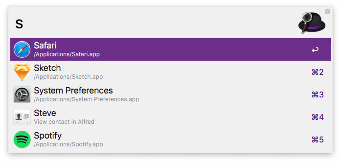
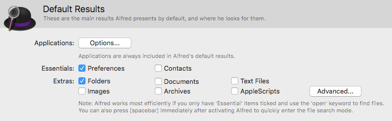
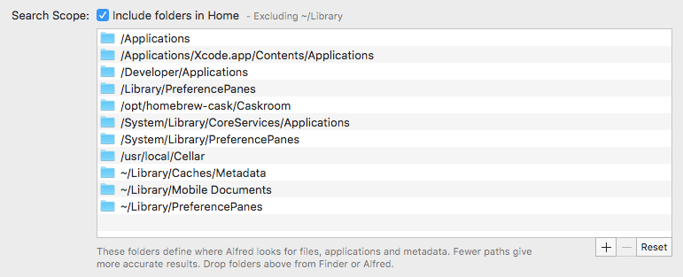
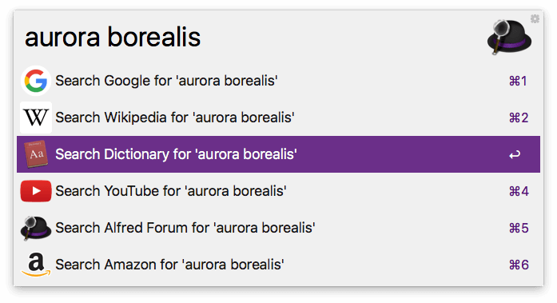
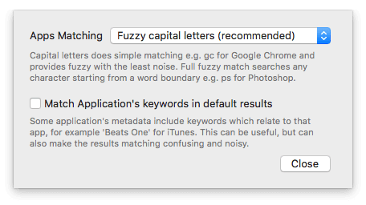

Default Results
Alfred's Default Results are the ones presented to you when you search without prefixing your search term with a keyword. They include your Applications, Contacts and Preferences by default, but you can modify these to fit your own needs.

In the Default Results preferences, you'll find the following settings:
If you're completely new to searching using Alfred, a good place to start is our "First 5 minutes with Alfred" guide.
Using Alfred's Default Search
Default results are the first results you'll see when you search Alfred without prefixing your search with a keyword. You'll find these settings in Alfred's Preferences under Features > Default Results.
There are three areas to look at to tell Alfred what kind of results you want to see; File types, search scope and fallback searches.
1. Default Result File Types
First, choose the types of files you want to see in your default results.

Only choose the essential file types you want to see every time you search, as you can expand your search by prefixing your search term with the "open" and "find" keywords
You can add additional file types to your default results by checking the boxes in Alfred's preferences under Features > Default Results.
Creating your own Search Filters
If you're a Powerpack user, you can create a File Filter Workflow for custom searches for particular file types or search scopes.
It's a brilliant way to search for file types you need often; for example, a File Filter to search for all images in your Documents folder.
To add less common file types, you can click "Advanced" to add further file types by dragging them or typing in the UTI (Uniform Type Identifier). If you'd like to use the ContentTypeTree rather than just the ContentType, add a + before the name (e.g. By adding a + before public.jpeg, you extend the file type search to public.image, including more than just .jpg images.)
However, using File Filters or the "open" and "find" keywords is the recommended way to expand your search.
Adding Web Bookmarks to your results
Take a look at the Web Bookmarks feature to include Safari and Chrome bookmarks to your results. You can either browse these using their own keyword prefix or by including them in your default results.
2. Setting Your Search Scope
The search scope is set to include all of the usual locations where files and applications are likely to be found. If you store applications or files outside of the default set of folders, you can add paths to Alfred's scope.

You can add to the scope either by pressing the + button at the top right of the Search Scope box, or by dragging a folder from Finder into that box.
If you encounter issues and files are no longer found, you can use the "Reset" button to revert to Alfred's default search scope.
3. Fallback Searches
Fallback searches are the search options Alfred presents to you when he can't find results locally on your Mac. By default, these are Google, Wikipedia and Amazon.
Powerpack users can customise these to use different web searches, custom searches or workflows, and we've created a tutorial on setting up your own fallback searches.

To set your fallback searches, open Alfred's preferences to Features > Default Results and click "Setup fallback searches" at the bottom of the pane. You can then choose your own fallback searches.
You can use any default web search, custom search or fallback search trigger as a custom fallback search.
You can also choose whether they should only appear when there are no results, or whether they should intelligently appear at the end of results when relevant.
4. Applications Matching
Above the Default Results file types, the Applications Options button allows you to customise how Alfred includes apps in your search results.

Applications are always included in Alfred's default results, and you can customise whether the matching should match from capital letters (recommended, e.g. "gc" for Google Chrome) or full fuzzy from any word boundary (e.g. "ps" for Photoshop).
By default, Alfred ignores the keywords in an app's metadata (e.g. iTunes contains metadata for "Beats One, Radio" and many more, which can confuse results). You can choose to include these, but the additional keywords can make results matching confusing and noisy.
Learn more about searching with Alfred
What's next?